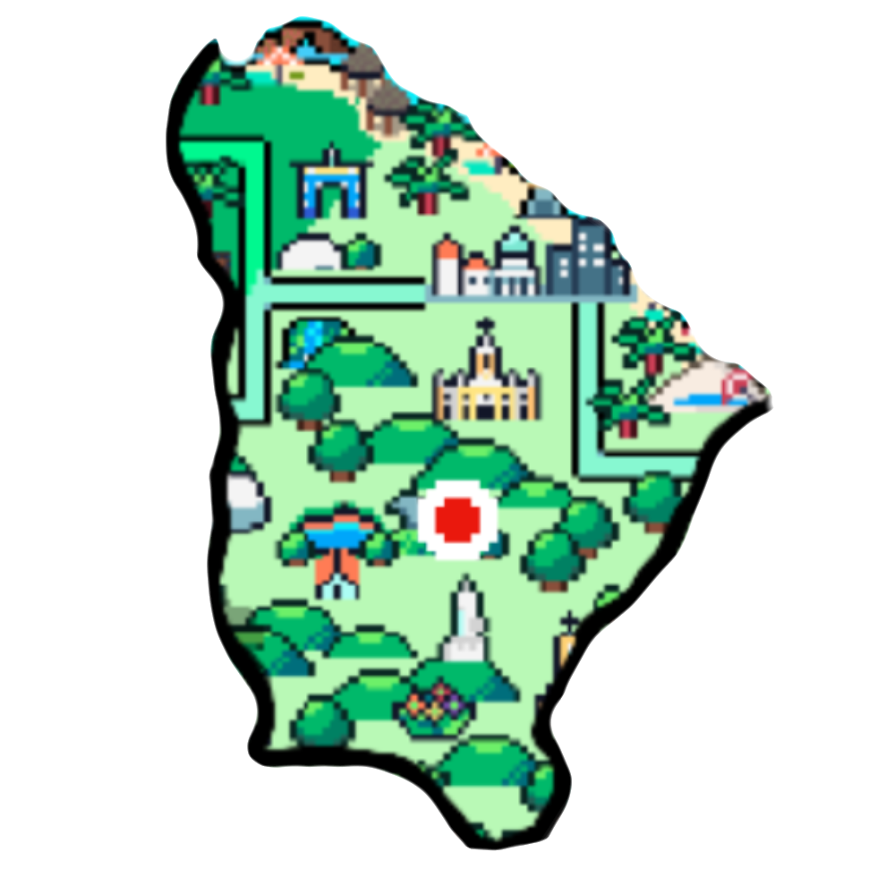

 Há relatos de historiadores de que, antes de Pedro Álvares Cabral chegar ao Brasil, espanhóis já tinham estado no território que hoje conhecemos como Ceará, seus nomes eram Diogo Lepe e Vicente Pinzón. Pinzón foi o primeiro a chegar, desembarcou onde hoje seria o município de Icapuí e Lepe teria desembarcado em Fortaleza. Dado o tratado de Tordesilhas (1494) estas descobertas não puderam ser oficializadas.
Praia da Canoa Quebrada A Praia da Cona Quebrada não dá para dispensar. Situada em Aracati, distante 182 km de Fortaleza, a praia de Canoa Quebrada é aquele lugar que você vai uma vez e quer voltar sempre! Tanto que já foi paraíso dos hippies e também o cenário de filmes preferido por famosos cineastas.
Lagoa da Jijoca em Jericoacoara Se você quer mesmo se esquecer do mundo e relaxar, a Lagoa da Jijoca é o lugar perfeito. Só ali você poderá apreciar um dos mais lindos picos do Nordeste, deitada em redes instaladas na fantástica lagoa do Paraíso e na Lagoa Azul. E de quebra, praticar esportes aquáticos como kitesurf e windsurf.
Chuva

Sol